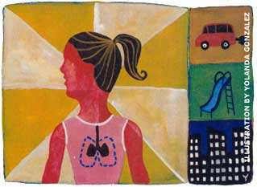

The ten-year program, led by University of Southern California researchers, has been tracking the lung health of about 3,000 middle school children from 12 communities since 1993. Children are especially vulnerable to pollution damage because their lungs are still developing, because their airways are smaller and, ironically, because they spend so much time playing and exercising outside.
The main irritant in the most polluted areas seems to be the fine particles and acid vapors of nitrogen dioxide from motor vehicle exhaust, industrial plant emissions and the burning of fossil fuels. "Interestingly, the areas are all currently meeting EPA standards, but those standards may not be stringent enough," suggests Jim Gauderman, Ph.D, lead author of the study.
The long-term effects of pollution on lung capacity are uncertain, but those children with lowered lung function may grow up with weaker or smaller lungs; and may be more vulnerable to respiratory diseases like pneumonia or bronchitis in their 60s and 70s. People living in polluted areas across the country should try to limit their exposure to air pollution, and they should increase their intake of antioxidant-rich fruits and vegetables, which protect against oxidative lung damage.
-Tanya Zimbardo
|
 |
|
|